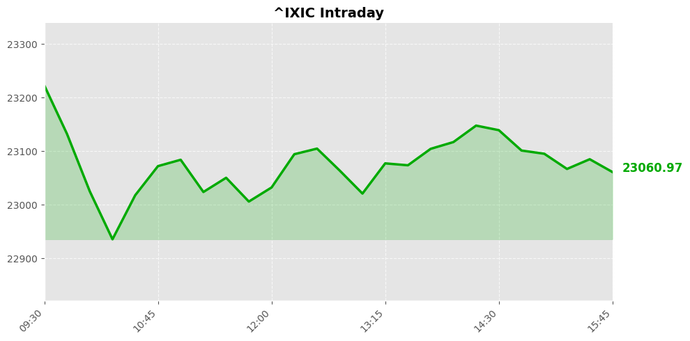
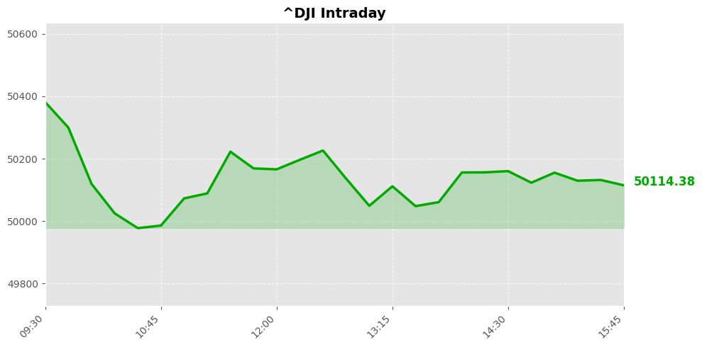
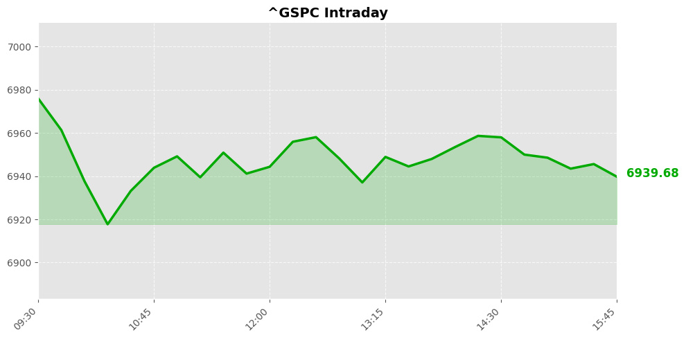

Daily Market Briefing
Market Overview



Market Analysis
The latest market snapshot reveals a predominantly cautious tone among major U.S. equity indices. The NASDAQ Composite closed at approximately 23,066, reflecting a modest decline of 36 points, or about 0.16%. Similarly, the Dow Jones Industrial Average dipped slightly by 66.74 points, equivalent to roughly 0.13%, closing near 50,121. The S&P 500 remained relatively stable, with negligible movement, closing at around 6,941 points.
This subdued performance across these benchmarks suggests a period of consolidation rather than decisive directional movement. Investors appear to be exercising caution amid ongoing macroeconomic uncertainties, including concerns about inflation trajectories, interest rate policies, and geopolitical developments. The slight declines in the NASDAQ and Dow indicate that market participants may be adopting a risk-averse stance, possibly awaiting clearer signals on economic growth and corporate earnings outlooks.
Market sentiment remains cautiously optimistic but vigilant. The stability of the S&P 500 hints at underlying resilience, supported by robust corporate fundamentals in certain sectors. However, the minor pullbacks across indices suggest that traders are wary of short-term volatility and are possibly consolidating positions ahead of upcoming economic data releases or policy decisions.
In summary, the current market trend reflects a phase of tentative stability with a cautious outlook. While there is no significant panic or exuberance, investors are attentively monitoring macroeconomic indicators and geopolitical events, which are likely to influence near-term momentum. Maintaining a balanced and vigilant approach seems prudent until more definitive signals emerge.
Today's Headlines
News Analysis
Certainly. Here's a comprehensive analysis based on today's financial news, structured into key points and insights:
Main Market Focus Points Today
-
Amazon’s AI Investment and Market Reaction
Amazon announced a substantial increase in AI-related spending, totaling around $200 billion, signaling a long-term strategic commitment. However, this move triggered a sharp 16% decline in its stock, marking the worst single-day slide in over a year. The market's concern revolves around the high capital expenditure amid uncertain short-term returns, reflecting investor wariness about large-scale innovation bets. -
Robust U.S. Job Data but Mixed Economic Signals
January’s employment figures surpassed expectations, with job gains more than doubling Wall Street forecasts, leading to a rise in the 10-year Treasury yield. Despite the strong data, there’s ongoing ambiguity about the overall economic health, as some sectors continue to face challenges, and the labor market remains uneven. The positive jobs report temporarily boosted equities but did not fully dispel recession fears. -
Market Volatility Despite Strong Data
Despite positive employment figures, equity markets experienced heightened volatility. Investors appear cautious, possibly due to concerns about inflation, Federal Reserve policy trajectories, and the sustainability of the economic recovery. The reaction underscores a risk-averse sentiment, with traders weighing conflicting signals from strong jobs data against potential headwinds. -
Institutional Moves and Strategic Positioning
Notably, prominent investor Bill Ackman disclosed a 10% stake in Meta, citing a "deeply discounted valuation." This signals institutional confidence in certain tech giants, potentially influencing sector sentiment. Additionally, some firms are raising price targets and expanding data center infrastructure, indicating growth optimism in cloud and AI-related sectors. -
Industry and Sector Highlights
- Technology & AI: Amazon’s aggressive AI spending and Micron’s positive outlook on high-volume chip production highlight ongoing technological advancements. The memory-chip maker’s stock surged as it ramped up shipping of new high-bandwidth memory (HBM4), reinforcing the importance of semiconductors in AI and data center growth.
- Travel & Consumer Services: Anecdotal reports of airline service disruptions reflect ongoing operational challenges in the travel sector, which could influence consumer sentiment and sector performance.
Potential Market Impact Factors
- Investor Sentiment and Valuation Concerns: The sharp decline in Amazon’s stock underscores fears about overinvestment in unproven technologies and the potential for high capital costs to weigh on profitability.
- Interest Rate Trajectory: Rising Treasury yields driven by strong employment data may pressure equities, especially those sensitive to borrowing costs and macroeconomic conditions.
- Institutional Confidence: Large-scale holdings in tech stocks like Meta suggest a potential sector rally in the near term, assuming valuation concerns are addressed.
Industry Trends Worth Noting
- AI & Cloud Infrastructure: The significant capital commitments from Amazon and ongoing data center investments highlight AI and cloud infrastructure as dominant growth drivers. Semiconductor companies like Micron are also benefiting from this trend, emphasizing the importance of high-performance memory solutions.
- Labor Market Dynamics: The mixed signals from employment data indicate a complex labor landscape, with some sectors experiencing robust growth while others remain sluggish. This could influence monetary policy and economic outlooks.
- Market Volatility and Risk Management: Heightened volatility suggests investors are seeking to balance growth opportunities against potential downside risks, likely leading to more cautious positioning in the near term.
In summary, today's market environment reflects a cautious optimism driven by strong economic data, strategic corporate investments, and underlying volatility. The focus remains on technological innovation, interest rate trends, and sector-specific growth prospects, shaping the investment landscape for the coming months.
Economic Indicators
Inflation Indicators
Employment Indicators
Consumer Indicators
Community Hot Stocks
| Rank | Symbol | Mentions | Source |
|---|---|---|---|
| 1 | FORD | 107 | |
| 2 | MSFT | 93 | |
| 3 | RDDT | 68 | |
| 4 | HIT | 65 | |
| 5 | HOOD | 57 | |
| 6 | VS | 53 | |
| 7 | FACT | 51 | |
| 8 | BEAT | 50 | |
| 9 | MU | 40 | |
| 10 | GOOG | 38 | |
| 11 | META | 37 | |
| 12 | APP | 36 | |
| 13 | CARE | 36 | |
| 14 | ADD | 35 | |
| 15 | NET | 35 | |
| 16 | ASTS | 35 | |
| 17 | BOND | 34 | |
| 18 | TALK | 32 | |
| 19 | PUMP | 32 | |
| 20 | FAST | 31 |
Market Outlook
The recent market data indicates a cautiously cautious tone, with major indices slightly retreating—NASDAQ down 0.16%, Dow down 0.13%, and the S&P 500 essentially flat. The declines reflect a nuanced investor sentiment amid mixed macroeconomic signals and sector-specific developments.
Key news highlights reveal underlying volatility. Amazon's sharp decline, triggered by concerns over AI spending, underscores the market's sensitivity to technology sector valuations and investment strategies. Additionally, the employment data, while strong, presents a "muddy" picture, suggesting ongoing uncertainties in labor market dynamics. The rise in the 10-year Treasury yield following the January jobs report points to expectations of continued inflation pressures and potential tightening of monetary policy, which could weigh on equity valuations.
Meanwhile, strategic moves by notable investors like Bill Ackman acquiring a stake in Meta at a discounted valuation signal potential value opportunities amidst broad market volatility. The upward revisions of price targets for data center buildout stocks suggest optimism in specific sectors tied to digital infrastructure growth.
In the upcoming 1-2 trading days, expect continued volatility driven by macroeconomic data, sector rotations, and investor reactions to earnings and corporate news. The market may face downward pressure if fears of rising rates and inflation persist, but selective opportunities could emerge in undervalued tech and infrastructure stocks.
Risks to watch include further rate hikes, geopolitical tensions, or unexpected economic data that could alter the risk appetite. Investors should focus on diversification, monitoring macroeconomic indicators, and staying alert to sector-specific developments—particularly in technology, infrastructure, and consumer sectors—where valuation opportunities and risks are evolving rapidly.
Follow Us

Scan to follow StockGate
For more US stock market insights